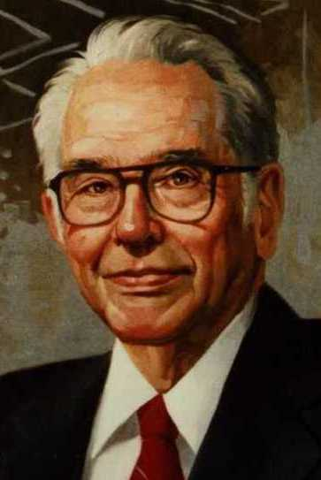
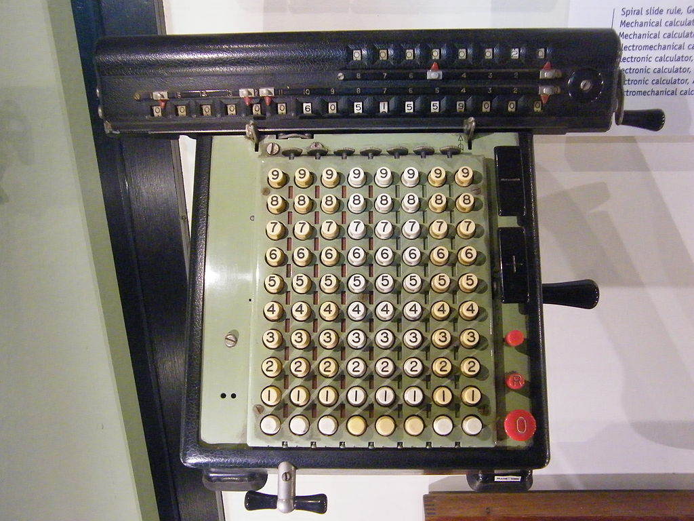
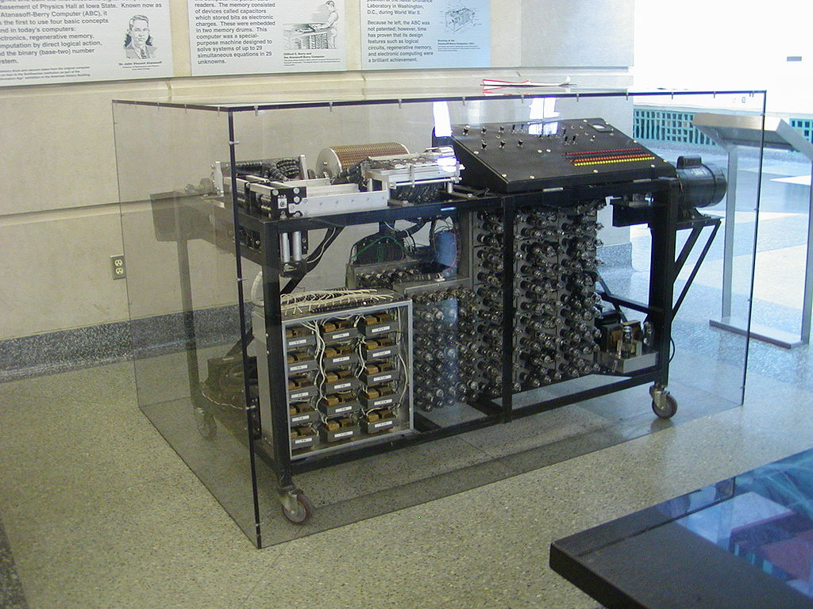

Djon Atanasov également orthographié John Vincent Atanasoff était un physicien, mathématicien, professeur d’université, informaticien et ingénieur américain de renommer étant l’un des fondateurs de notre ère technologique. Née le 4 octobre 1903, dans petite bourgade proche de New York nommée Hamilton, John voit le jour dans une famille baignée par les sciences et meurt à Frederick (Maryland), le 15 juin 1995. Son père, Ivan Atanasoff d’origine Bulgare est devenu ingénieur électricien après avoir immigré aux Etats-Unis et sa mère, Iva Lucena Purdy était une professeure de mathématiques d’origine française et irlandaise. Dès son plus jeune âge John était intéressé par les sciences appliquées et a très vite développé un sens de la critique. Très ambitieux à l’idée de pouvoir suivre de grandes études, par exemple à neuf ans il était déjà capable d’utiliser une Règle à calculs et il débutait au même moment à étudier les Logarithmes. En 1925, Atanasoff reçu son bachelier de sciences en génie électrique à l’Université de Floride. Il continua ses études à l’Université d’Etat de l’Iowa ou il y a obtenu son master en mathématiques en 1926 et compléta son cursus d’apprentissage en 1930 à l’Université du Wisconsin à Madison avec un doctorat de philosophie et de physique théorique, portant sur la constante diélectrique de l'hélium.
En partie à cause de la corvée d'utiliser le calculateur mécanique Monroe, qui était le meilleur outil à sa disposition pendant qu'il rédigeait sa thèse de doctorat, Atanasoff a commencé à chercher des méthodes de calcul plus rapides. À l'état de l'Iowa, Atanasoff a étudié l'utilisation des calculatrices de Monroe asservies et des tabulateurs d’IBM pour des problèmes scientifiques. En 1936, il a inventé un calculateur analogique pour analyser la géométrie de surface. La fine tolérance mécanique requise pour une bonne précision l'a poussé à envisager des solutions numériques. Grâce à une subvention de 650 $ reçue en septembre 1939 et à l'aide de son étudiant diplômé Clifford Berry, l’ordinateur Atanasoff-Berry (ABC) a été prototypé en novembre de la même année. Selon Atanasoff, plusieurs principes opératifs de l'ABC ont été conçus par lui pendant l'hiver 1938 après une promenade à Rock Island, Illinois. Les idées clés utilisées dans l'ABC comprenaient les mathématiques binaires et la logique booléenne pour résoudre jusqu'à 29 équations linéaires simultanées. L'ABC n'avait pas d’unité centrale de traitement (CPU), mais a été conçu comme un dispositif électronique utilisant des tubes à vide pour le calcul numérique. Il avait également une mémoire de condensateur régénérative qui fonctionnait par un processus similaire à celui utilisé aujourd'hui dans la mémoire DRAM.
En 1952, il a créé Ordnance Engineering Co. En 1973, après qu'un juge a annulé un brevet détenu par Sperry Rand Corp, l'ordinateur Atanasoff-Berry a été crédité comme le premier ordinateur numérique électronique. En effet, Eckert et Mauchly, concepteurs de l'ENIAC, brevetèrent leur invention comme le premier ordinateur ("first digital computer"), mais un procès dans les années 1970, juge qu'ils n'ont fait que reprendre les idées de l'ordinateur de Atanasoff-Berry, ABC, et consacre ainsi Atanasoff comme l'inventeur du premier ordinateur électronique. Ses idées, utilisation du binaire, utilisation d'une unité arithmétique et logique pour effectuer les calculs de base furent reprises dans l'ENIAC, considéré ainsi à tort comme le premier ordinateur. Le procès Engineering Co vs Sperry Rand Corp est entré dans l'histoire non seulement pour l'attribution de l'invention de l'ordinateur à Atanasoff, mais aussi pour l'invalidation du brevet d'Eckert et Mauchly, mettant cette invention dans le domaine public.